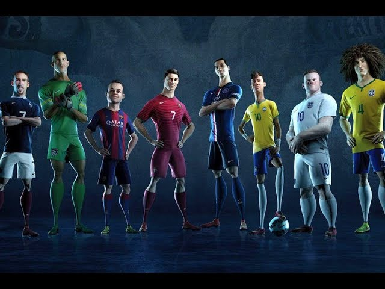

SURGIMENTO DO FUTEBOL
Comercial da Nike na Copa do Mundo de 2014
Jogos Antigos com Bola
O futebol tem raízes muito antigas. Civilizações como a chinesa, grega e romana já praticavam jogos com bola há milhares de anos. Na China, por volta de 2.500 a.C., existia um jogo chamado cuju, em que os jogadores chutavam uma bola de couro tentando acertar um alvo entre duas estacas. Na Grécia e em Roma, jogos semelhantes eram usados para treinar soldados e como forma de lazer.
O Surgimento do Futebol Moderno
O futebol como conhecemos hoje começou a tomar forma na Inglaterra do século XIX. Nessa época, escolas e universidades praticavam diferentes versões de jogos com bola, muitas vezes misturando futebol com rugby. Para unificar as regras, em 1863, foi criada a Football Association (FA) em Londres, e com ela surgiram as primeiras regras oficiais do futebol moderno.
A Expansão Mundial do Esporte
Com o tempo, o futebol passou a se espalhar para vários países, especialmente com o crescimento do Império Britânico. A simplicidade do jogo e o pouco equipamento necessário facilitaram sua popularização em diferentes culturas e continentes.
A Chegada do Futebol ao Brasil
O futebol chegou ao Brasil em 1894, trazido por Charles Miller, um brasileiro que estudou na Inglaterra. Ele trouxe bolas, uniformes e conhecimento das regras, organizando as primeiras partidas no país. Desde então, o esporte cresceu rapidamente e se tornou uma paixão nacional.
O Futebol Hoje
Hoje, o futebol é o esporte mais popular do mundo. Milhões de pessoas jogam e assistem aos jogos, e competições como a Copa do Mundo movimentam bilhões de fãs. Mais do que um esporte, o futebol se tornou um fenômeno cultural que une pessoas de todas as partes do planeta.